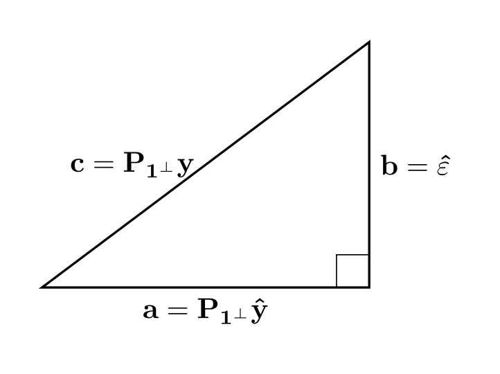

Linear Model Notes
1 OLS Basics
Definition 1 A random vector \mathbf{z} \in \mathbb{R^n} is standard normal iff components (\mathbf{z_i})_{i=1}^n are independantly identically distributed \mathcal{N}(\mathbf{0,I_n}).
Definition 2 (OLS) An ordinary least squares linear model (OLM) provides an estimate \hat{\beta} of unknown coefficent \beta \in \mathbb{R^{p \times 1}} to the problem,
\mathbf{y} = \mathbf{X} \beta + \mathbf{\varepsilon}
that minimises \| \hat{\varepsilon} \| for \hat{\varepsilon} = \mathbf{y-X \hat{\beta}}.
Items \mathbf{y} \in \mathbb{R}^{n \times 1}, \mathbf{X} \in \mathbb{R^{n \times p}} are known.
We assume that \dfrac{\varepsilon}{\sigma} is standard normal (Definition 1) \Leftrightarrow \varepsilon \sim \mathcal{N}(\mathbf{0, \sigma^2 I_n}), where we may not know \sigma.
Theorem 1 (Solution of OLS) Assume that \mathbf{X} has full rank.
The solution of OLS is given by \hat{\beta} = \mathbf{(X^TX)^{-1}X^Ty}.
Proof. Let subspace U \leq \mathbb{R^n} generated via the span of \mathbf{X} columns. Then by property of orthogonal projection the \mathbf{\hat{y}=X \beta} \in U that minimises \| \hat{\varepsilon} \| = \| \mathbf{y-\hat{y}} \| is given by \mathbf{P}_U \mathbf{y}.
Therefore, \begin{align*} \forall u \in U, \langle u, \hat{\varepsilon}\rangle =0 &\implies \mathbf{(y-X \hat{\beta})^TX} = 0 \\ &\Leftrightarrow \mathbf{y^T X} = \mathbf{\hat{\beta}^T X^TX} \\ &\Leftrightarrow \mathbf{X^Ty} = \mathbf{X^T X \hat{\beta}} \\ &\Leftrightarrow \mathbf{\hat{\beta}} = \mathbf{(X^TX)^{-1}X^Ty} \end{align*}
2 Large Model vs Submodel
Theorem 2 (ANOVA F-test) Let p=p_0+p_1, \mathbf{X = [X_0, X_1]} \in \mathbb{R}^{n \times p} for \mathbf{X_0} \in \mathbb{R}^{n \times p_0}, \mathbf{X_1} \in \mathbb{R}^{n \times p_1}
Consider the following two hypothesis of a full model vs a submodel,
\begin{align*} \textbf{H}_0 \text{ (null)}&: \mathbf{y = X_0 \beta_\mathcal{N} + \varepsilon}, \quad && \mathbf{\beta}_\mathcal{N} \in \mathbb{R}^{p_0 \times 1}, \quad &&&\mathbf{\varepsilon \sim \mathcal{N}(0,I_n)} \\ \textbf{H}_1 \text{ (full)}&: \mathbf{y = X \beta_\mathcal{F} + \varepsilon}, \quad && \mathbf{\beta}_\mathcal{F} \in \mathbb{R}^{p \times 1}, \quad &&&\mathbf{\varepsilon \sim \mathcal{N}(0,I_n)} \end{align*}
Under the null hypothesis the following statistic is F distributed. \dfrac{\| \mathbf{\hat{\varepsilon}_\mathcal{N} - \hat{\varepsilon}_\mathcal{F}} \| /p_1} {\| \mathbf{\hat{\varepsilon}_\mathcal{F}} \|/(n-p)} \sim F_{p_1, n-p}
Proof. The following picture is helpful:
Let U_0, U denote the column span of \mathbf{X_0, X} respectively. Since U_0 \leq U the orthogonal compliment of U_0 restricted to U is in the direct sum U = U_0 \oplus U_0^{\perp|_U}. Also V = U \oplus U^\perp. Therefore V is the direct sum of orthogonal subspaces U_0, U_1, U^\perp, for U_1 = U_0^{\perp|_U}.
Since the components of \mathbf{\varepsilon} are independant w.r.t any normal basis it olds that it holds that projections \mathbf{P}_{U_0} \varepsilon, \mathbf{P}_{U_1} \varepsilon, \mathbf{P}_{U^\perp} \varepsilon are independant because each projection can be expressed in terms of disjoint elements of the orthnormal basis created by combining orthonormal basis of U_0, U_1, U^\perp.
We will now show that \mathbf{\hat{\varepsilon}_\mathcal{N} - \hat{\varepsilon}_\mathcal{F}} = \mathbf{P}_{U_1} \varepsilon and \mathbf{\hat{\varepsilon}_\mathcal{F}} = \mathbf{P}_{U^\perp} \varepsilon. This implies that they are independant normal and therefore the ratio of their norms divided by their dimension/degrees of freedom is eqivalent to an F distribution and thus completing the proof.
We see,
\mathbf{y} = \mathbf{P}_U \mathbf{y} + \mathbf{P}_U^\perp \mathbf{y} from directness,
\mathbf{y} = \mathbf{P}_U \mathbf{y} + \mathbf{\hat{\varepsilon}}_\mathcal{F} from OLS definition and the fact that full fitted \mathbf{y} is given by \mathbf{P}_U \mathbf{y}
Hence \mathbf{\hat{\varepsilon}}_\mathcal{F} = \mathbf{P}_{U^\perp} \mathbf{y}. Also,
\mathbf{y} = \mathbf{P}_{U_0} \mathbf{y} + \mathbf{P}_{U_1} \mathbf{y} + \mathbf{P}_{U^\perp} \mathbf{y} from directness,
\mathbf{y} = \mathbf{P}_{U_0} \mathbf{y} + \mathbf{\hat{\varepsilon}}_\mathcal{N} from OLS definition and the fact that null fitted \mathbf{y} is given by \mathbf{P}_{U_0} \mathbf{y}
Hence \mathbf{\hat{\varepsilon}}_\mathcal{N} = \mathbf{P}_{U_1} \mathbf{y} + \mathbf{P}_{U^\perp }\mathbf{y}. Therefore \mathbf{\hat{\varepsilon}}_\mathcal{N} - \mathbf{\hat{\varepsilon}}_\mathcal{F} = \mathbf{P}_{U_1} \mathbf{y}.
Now under the null hypothesis \mathbf{y} = \mu_\mathcal{N} + \varepsilon for some \mu_\mathcal{N} \in U_0, therefore since U_1, U^\perp are orthogonal to U_0 it holds that for any W \in \set{U_1, U^\perp} \ \mathbf{P}_W \mathbf{y} = \mathbf{P}_W \mathbf{\varepsilon}. This gives us what we wanted.
3 R2 and Sample Correlation
Definition 3 The sample correlation between vectors \mathbf{x,y} is defined as
\begin{align*} r(\mathbf{x,y}) &= \cfrac{\sum_i (x_i - \bar{x})(y_i - \bar{y})}{ \sqrt{\sum_i (x_i - \bar{x})^2} \sqrt{\sum_i (y_i - \bar{y})^2}} \\ &= \cfrac{(\mathbf{x-P_1 x})^T (\mathbf{y-P_1 y})}{\| \mathbf{x-P_1 x} \| \| \mathbf{y-P_1 y} \|} \\ &= \bigg\langle \cfrac{\mathbf{P_{1^\perp} x}}{\|\mathbf{P_{1^\perp} x}\|}, \cfrac{\mathbf{P_{1^\perp} y}}{\|\mathbf{P_{1^\perp} y}\|} \bigg\rangle \end{align*}
Where we are lax with notation and let \mathbf{1} denote \text{span}\set{\mathbf{1}} for \mathbf{1} = [1,\ ...\ ,1]^T.
Definition 4 Given real and predicted \mathbf{y}, \mathbf{\hat{y}}, the coefficent of determination is defined as R2(\mathbf{y,\hat{y}}) \begin{align*} & R2(\mathbf{y,\hat{y}}) = 1 - \frac{SS_{res}}{SS_{tot}}, & \text{for } SS_{res} &= \| \mathbf{y-\hat{y}} \|^2 & SS_{tot} &= \| \mathbf{y-\bar{y}} \|^2 \\ &&&= \|\varepsilon\|^2 &&= \mathbf{\|P_{1^\perp} y\|^2} \end{align*}
Remark 1. Note that \mathbf{\hat{y}} in Definition 4 is general. We will specify details to prove the following.
Lemma 1 If the predictions \mathbf{\hat{y}} are standard ols as in Definition 2, then it holds that r(\mathbf{y}, \mathbf{\hat{y}}) = R2(\mathbf{y,\hat{y}})
Proof. Take \mathbf{y = \hat{y}} + \hat{\varepsilon}, project into \mathbf{1^\perp} to get
\mathbf{P_{1^\perp}y} = \mathbf{P_{1^\perp}\hat{y}} + \hat{\varepsilon} since \hat{\varepsilon} \in U^\perp \leq 1^\perp.
Since \mathbf{\hat{y}} \in U and \hat{\varepsilon} \in U^\perp are perpendicular the same therefore holds for \mathbf{P_{1^\perp}\hat{y}} \in U \cap \mathbf{1^\perp} and \hat{\varepsilon} \in U^\perp.
The following picture summarises things well.

So we have \begin{align*} r(\mathbf{y}, \mathbf{\hat{y}}) &= \bigg\langle \cfrac{\mathbf{P_{1^\perp} y}}{\|\mathbf{P_{1^\perp} y}\|}, \cfrac{\mathbf{P_{1^\perp} \hat{y}}}{\|\mathbf{P_{1^\perp} \hat{y}}\|} \bigg\rangle = \bigg\langle \cfrac{\mathbf{c}}{\|\mathbf{c}\|}, \cfrac{\mathbf{a}}{\|\mathbf{a}\|} \bigg\rangle = \mathbf{\frac{\|a\|}{\|c\|}} \\ &= \mathbf{\frac{\|P_{1^\perp} \hat{y}\|}{\|P_{1^\perp} y\|} } \end{align*}
and thus,
r(\mathbf{y}, \mathbf{\hat{y}})^2 = \mathbf{\frac{\|P_{1^\perp} \hat{y}\|^2}{\|P_{1^\perp} y\|^2} } = \mathbf{\frac{\|P_{1^\perp} y\|^2 - \|\varepsilon\|^2}{\|P_{1^\perp} y\|^2} } = 1 - \frac{SS_{res}}{SS_{tot}}
\square